A gen-class may inherit from another gen-class. Suppose you work as director of human resources in a company and you need to measure employee productivity. Incredible but true: you are also a Python programmer. So you start developing a small application for managing employees. Although you are a director, you have reached a high level of wisdom (maybe due to the fact that you program in Python). So you know that there are two kinds of employees: those that work and those that don't. You decide to create 2 different classes to reflect this:
class Person:
root = True
title = String(show=False)
firstName = String()
name = String()
def onEdit(self, created):
self.title = self.firstName + ' ' + self.name
class Worker(Person):
root = True
productivity = Integer()
Indeed, evaluating productivity on persons that do not work has no sense. Because both Persons and Workers are specified with root=True, they become key concepts and you can create instances of both classes through the dashboard:
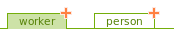
The "edit" view for creating a person looks like this:
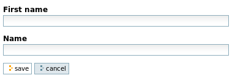
The "edit" view for creating a worker looks like this:
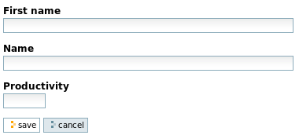
After a while, you become anxious about having 95% of the data in your database (=Person instances) serving absolutely no purpose. Logically, you decide to register the hair color for every non-worker. You realize that you need to change your model to be able to do this:
class Person: abstract = True title = String(show=False) firstName = String() name = String() def onEdit(self, created): self.title = self.firstName + ' ' + self.name class Worker(Person): root = True productivity = Integer() class Parasite(Person): root = True hairColor= String()
With this new model, class Person serves the single purpose of defining fields which are common to Workers and Parasites. It has no sense to create Person instances anymore, so it becomes abstract. Specifying classes as abstract is as simple as adding abstract=True in the class definition. There is no specific Python construct for declaring classes as abstract. With this new model, the dashboard evolves:
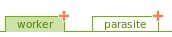
While the "edit" view is left untouched for workers, it evolves for parasites:
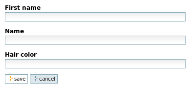
After a while, you become so excited about encoding hair colors that you would like to encode it even before encoding a parasite's name and first name. You have noticed that with gen, order of fields within the "edit" and "consult" views follows order of field declarations in the corresponding gen-classes; furthermore, fields defined in child classes appear after the fields defined in parent classes. Fortunately, the "move" parameter allows to change this default setting. Changing the Parasite class this way produces the desired result:
class Parasite(Person):
root = True
hairColor= String(move=-2)
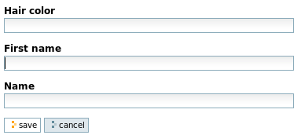
When defining a gen-class, some method names are reserved. Until now, we have already encountered the method onEdit, like in this example:
class Person: abstract = True title = String(show=False) firstName = String() name = String() def onEdit(self, created): self.title = self.firstName + ' ' + self.name
This method is called by gen every time an instance of Person is created (be it through-the-web or through code --yes, at present we have only created instances through-the-web; it is also possible to do it through code like explained below) or modified. Besides the self parameter (which is the newly created or modified instance), the method has one boolean parameter, created. When an object is newly created, created=True. When the object is modified, created=False. Note that the method is not called when an object is modified through code (else it could lead to infinite recursion). In the example, the title of a person is updated from its name and first name every time it is created or modified.
Another special method is named validate. While the field-specific validators are used for validating field values individually, the validate method allows to perform "inter-field" validation when all individual field validations have succeeded. Consider this extension of class Parasite:
class Parasite(Person):
root = True
hairColor= String(move=-2)
def validate(self, new, errors):
if (new.hairColor == 'flashy') and (new.firstName == 'Gerard'):
errors.hairColor = True
errors.firstName = "Flashy Gerards are disgusting."
Besides the self parameter, the validate method has 2 parameters: new is an object containing new values entered by the user for every visible field of the currently displayed page; errors is an empty object waiting for your action. Every time you consider that a field has not the right value, feel free to add, to the errors object, a new attribute whose name is the name of the erroneous field and whose value is either a text message or simply a boolean value. In the latter case, gen will render the standard error message for that field (more about error messages below). In the above example, you, as a director, felt that people whose first name is Gerard and whose hair color is too flashy are simply not allowed to work in your company. Trying to encode such a disgusting person would lead to this screen:
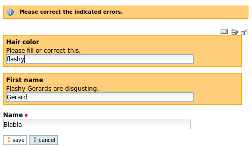
By the way, I have changed class Person such that the field name is now mandatory (name = String(multiplicity=(1,1))). So I can show you now that inter-field validation is only triggered when all individual field validations succeed. Check what happens if you don't give Gerard a name:
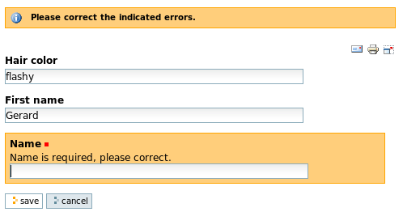
The validate method didn't come into play (yet...).
pod (Python Open Document) is another component that is part of the Appy framework. It allows to produce documents from data available to Python code. Guess what? gen is tightly integrated with pod! Until now, gen allows us to produce "web" (edit and consult) views from gen-classes. Through pod, we will now create "document" views from gen-classes, like ODT, PDF, Doc or RTF documents.
Let's begin with the "hello world" pod-gen integration. Suppose you want to produce a document from a given gen-class, let's say the class Person. In this class, simply add the declaration pod=True. Re-generate your product, re-install it through Plone (Site setup) and go the configuration panel for your application. Go to the default flavour: a new tab "document generation" has been added:
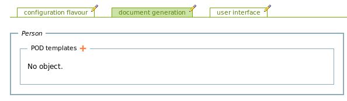
Now, create this beautiful document with your favorite word processor and save it as "helloWorld.odt":
self.title must be typed while the word processor is in mode "record changes". Now, go back to your browser and click on the "plus" icon for associating the POD template you just created to the class Person:
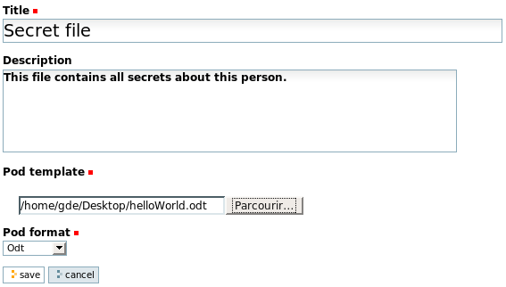
Save this and go to the consult view of a Person. In the example below, I am on the consult view of a worker:
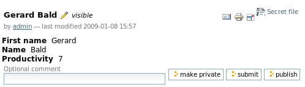
The list of available documents one may generate from this person are visible in the top-right corner of the consult view. Here, only one document may be generated: "Secret file". Click on it and you will get this file:
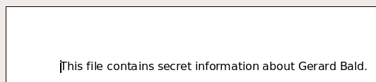
You have noticed that a class inherits from POD templates defined in its parents: the "Secret file" template was defined for class Person and is available for Worker and Parasite instances. Let's add another POD template that we will build specifically for parasites. First, add pod=True in the class Parasite. Please add also another field to parasites (a String in XHTML format): it will allow to illustrate how to render such a field in a document. So add this line to class Parasite:
sordidGossips = String(format = String.XHTML)
Now, please create this parasite:
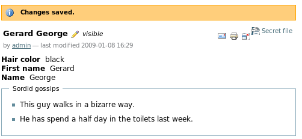
Create this POD template and associate it to class Parasite in the default flavour:
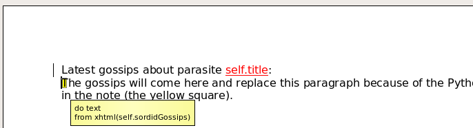
With OpenOffice, create a note by selecting Insert->Note in the menu. The "document generation" tab in the flavour should now look like this:
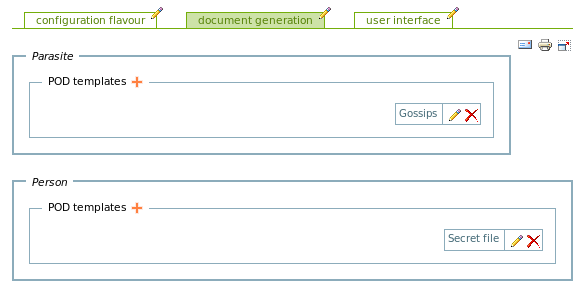
From any parasite, it is now possible to generate 2 documents:
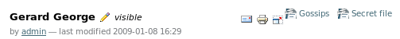
Clicking on "gossips" wil produce this file:
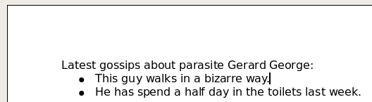
Exhaustive documentation about writing POD templates may be found on this site (start here). You have noticed that the set of POD templates associated to a given class is specific to a given flavour. Although a POD template is associated to a class, the POD template may render a lot of information coming from a complex web of interrelated objects. Indeed, the object that is referred to as self in the POD template is only a starting point. Our example doesn't allow to illustrate this because we have a single class which has no Ref fields. That said, in the future we will also provide the possibility to define POD templates for rendering dashboard views. The starting point here will not be a single instance but the list of objects that is currently displayed in the dashboard.
What you need to know when using pod with gen is the exact pod context (ie the set of Python objects, variables, modules, etc) that is given by gen to your pod template. The table below presents all entries included in it.
| Entry | Description |
|---|---|
| self | The object that is the starting point for this template. |
| user | The user that is currently logged in. Its id is given by user.id. |
| podTemplate | The POD template (object) that is currently rendered. Attributes of a POD template are: title, description, podTemplate (= the file descriptor to the corresponding ODT POD template), podFormat (the output format, a string that may be odt, pdf, doc or rtf). |
| projectFolder | A string containing the absolute path of the folder where your gen-application resides on disk. If your gen-application is a folder hierarchy, projectFolder is the root folder of it. |
In the previous examples, we have always rendered documents in Odt format. When generating ODT, gen and pod do not need any other piece of software. If you configure a template for generating documents in Adobe PDF (Pdf), Rich Text Format (Rtf) or Microsoft Word (Doc), you will need to run OpenOffice in server mode. Indeed, for producing any of these formats, pod will generate, from your POD template, an ODT file and will ask OpenOffice to convert it into PDF, DOC or RTF. Suppose you modify the ODT template named "Gossips" for producing documents in PDF instead of ODT (in the config, default flavour, tab "document generation", edit the template named "gossips" and choose "Pdf" as "Pod format"). If now you go back to the consult view for a parasite, the PDF icon will show up for the template "Gossips":
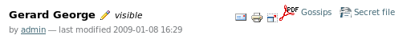
If you click now on "Gossips", gen will produce an error page because he can't connect to OpenOffice. Please run it now as explained here (section "Launching OpenOffice in server mode"). If now you retry to generate gossips, you will probably have an error again. Why? 2 main causes: (1) The Python interpreter that runs your Zope and Plone does not include the OpenOffice connectors (="UNO"); (2) You did not run OpenOffice on port 2002 which is the port configured by default in any gen-application. For solving both problems, any configuration panel of any gen-application allows you to configure 2 parameters. In the portlet of your gen-application, click on the hammer and then on the pen that lies besides the title of the application:
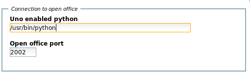
In this example, the Python interpreter that runs my Zope is not UNO-compliant. So I have specified, in parameter "Uno enabled python", the path of such an interpreter. My machine runs Ubuntu: the interpreter installed at /usr/bin/python is UNO-enabled. If you don't have Ubuntu, the simplest way is to specify the path to the UNO-enabled Python interpreter that ships with OpenOffice. When clicking on "Save", if the specified path does not correspond to an UNO-enabled Python interpreter, you will get a validation error. Change the OpenOffice port if necessary; now, when trying to get PDF gossips it should work.
Until now, we have uploaded POD templates in the configuration panel (for a given flavour). It is also possible to specify "file-system" POD templates through code. In fact, it is even the default behaviour. When declaring a class with pod=True, when (re-)installing the application, gen will check on the file system if a POD template exists for this class. If yes, it will already load it. If no, it simply proposes a non-filled widget in the flavour that will allow you to upload POD templates through-the-web (this is what happened in our examples so far). Suppose that the class Parasite lies in /home/gde/ZopeInstance1/lib/python/ZopeComponent.py. Move your file gossips.odt to /home/gde/ZopeInstance1/lib/python/Parasite.odt. In the flavour, remove the existing ODT template named "Gossips" for class Parasite. Now, reinstall you gen-application. In the same folder as where class Parasite is defined on the file system, gen finds a file named <class_name>.odt (<class_name> being Parasite in this case.) So it will load the corresponding template (for every flavour defined in your gen-application). Now, if you go back to your flavour (tab "document generation"), you will find an ODT template named "Parasite":
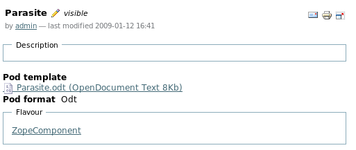
Instead of writing pod=True, you may define a list of names. Remove again the POD template named "Parasite" from the flavour. Then, on the file system, move Parasite.odt to SordidGossips.odt and copy it also to MoreGossips.odt in the same folder. Then, in class Parasite, replace pod=True with pod=['SordidGossips', 'MoreGossips']. Re-generate your Plone product, restart Zope and re-install your gen-application. Now go back to your flavour (tab "document generation"), you should get this:
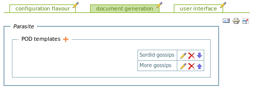
When POD templates are loaded from code, only minimalistic information is available for getting the corresponding POD template objects in the flavour: fields title and podTemplate (=the ODT file) are filled, but field description is empty and field podFormat is always Odt. Although you may now modify all those data through-the-web, in the future gen will allow you to write things like pod=[PodTemplate('SordidGossips', format='odt', description='blabla'...),...]. Moreover, new fields will be added to the POD template object in the flavour: a condition and a permission for restricting document generation from an ODT template to some users or under some circumstances; the possibility to define a "freeze event" (when this event occurs --typically a workflow transition--, the generated document is written in the Plone database and subsequent clicks do not compute a new document but simply download the frozen one), etc.
We already know that for each gen-class, gen creates the web "consult" and "edit" views. We also know from the page "Creating basic classes", that both views may be splitted into several pages if the number of widgets becomes too large; on every page, widgets may lie together into groups. It can be accomplished through attributes page and group that one may define on class attributes.
By default, all widgets are rendered on both edit and consult views on a single page which is named main (main is the default value for parameter page). The default value for parameter group is None: by default, a widget is not rendered into a group but simply added at the end of the current page.
Let's consider the following example. It is an improved version of the Human Resources software developed by yourself several minutes ago (see above). I have added more fields in order to illustrate how to layout fields into pages and groups.
class Person:
abstract = True
pod = True
title = String(show=False)
n = 'name_3'
firstName = String(group=n, width=15)
middleInitial = String(group=n, width=3)
name = String(multiplicity=(1,1), group=n, width=30)
contractDetails = String(format=String.XHTML)
cia = {'page': 'contactInformation', 'group': 'address_2'}
street = String(**cia)
number = Integer(**cia)
country = String(**cia)
zipCode = Integer(**cia)
cio = {'page': 'contactInformation', 'group': 'numbers_3', 'width': 20}
phoneNumber = String(**cio)
faxNumber = String(**cio)
mobilePhone = String(**cio)
workPhoneNumber = String(**cio)
workFaxNumber = String(**cio)
workMobilePhone = String(**cio)
def onEdit(self, created):
self.title = self.firstName + ' ' + self.name
class Worker(Person):
root = True
productivity = Integer()
class Parasite(Person):
root = True
pod = ['SordidGossips', 'MoreGossips']
hairColor = String(group='hairyCharacteristics')
sordidGossips = String(format = String.XHTML, page='Gossips')
parasiteIndex = String(validator=['low', 'medium', 'high'],
page='contactInformation', group='numbers')
avoidAnyPhysicalContact = Boolean(page='contactInformation')
def validate(self, new, errors):
if (new.hairColor == 'flashy') and (new.firstName == 'Gerard'):
errors.hairColor = True
errors.firstName = "Flashy Gerards are disgusting."
Oufti! Let's give some explanations about this bunch of lines. Attributes firstName, middleInitial and name of class Person are in group name which will be rendered as a table having 3 columns because of the trailing _3 of n = 'name_3'. For those fields, no page was specified; they will be rendered on the first (=main) page. When defining several widgets in a group, the shortest way to write it is to define a dictionary (like cia or cio) containing common parameters (page and group) and use it with the ** prefix that "converts" it into parameters (like for attributes street, number, etc).
Based on this new definition, the "consult" view for a worker looks like this (main tab):
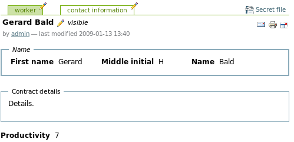
The page "contact information" is here:
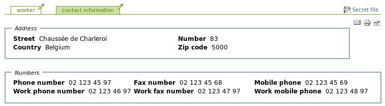
Changing the layout is as simple as changing some details into your class, re-generating and restarting Zope. For example, try to render group "numbers" in 2 columns instead of 3:
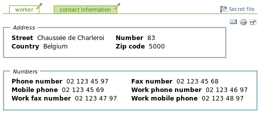
Better ! The "edit" view renders the widgets in the same way, but uses their "editable" version instead. Here is the main page:
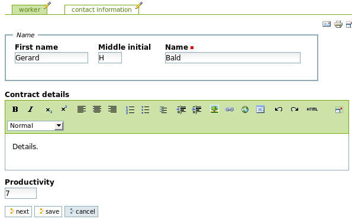
Moreover, buttons "next" and "back" are displayed when relevant. Here is the page "contact information" from the "edit" view:
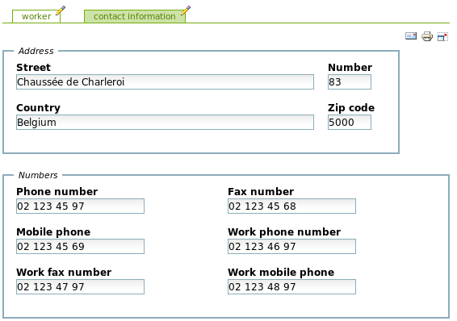
Now, for displaying parasites, we can of course reuse some pages and groups from the parent class Person and potentially add new pages and/or groups. In our example, attribute hairColor was added to the main page, in a new group named hairyCharacteristics:
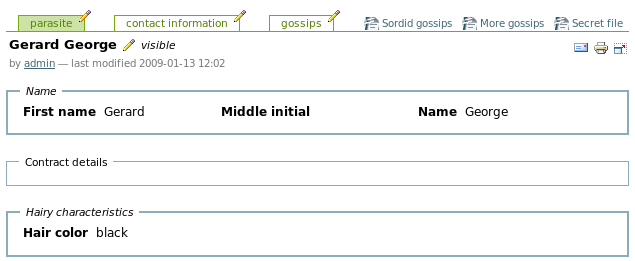
Attribute sordidGossips was put in a page that does not exist for workers:
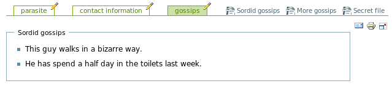
Attribute parasiteIndex was put in an existing group of an existing page, while avoidAnyPhysicalContact was added to the end of an existing page outside any group:
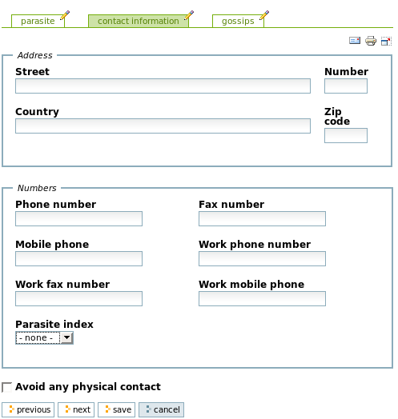
Tip: try to avoid performing inter-field validation on fields that are not on the same page.
In the future, gen will provide specific Page and Group class descriptors that will allow to go further into the layout customization. For example, you will be able to write things like hairColor = String(group=Group('hairyCharacteristics', columns=['50%', '25%', '25%'])).
In the introductory page about gen, we have already introduced the tool and its flavours that are available in any gen-application; at several other places we have also described features involving them. In this section, we will go one step further and describe the tool and its flavours in a more systematic way (or at least give pointers to explanations given in other places).
We will use a gen-application named ZopeComponent.py, which contains the ZopeComponent class as defined in this page, augmented with classes Person, Worker and Parasite as defined above. Here is the portlet for this gen-application:
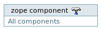
When clicking on the hammer, you are redirected to the main page of the configuration panel (we will say "tool" in the remainder of this page):
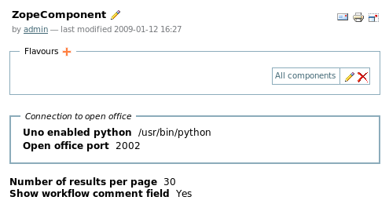
Before talking about flavours, let's explain the parameters that are directly visible in this page. Those parameters apply throughout your whole gen-application (for all flavours). Parameters in group "Connection to Open Office" are used for connecting Plone to OpenOffice in server mode for producing documents from gen-applications in PDF, DOC or RTF. This is already described here. The "number of results per page" is the maximum number of objects that are displayed on any dashboard page. Set this number to "4" (click on the pen besides "ZopeComponent"). Then, go back to the Plone main page (by clicking on the blue tab named "home", for example) and click on the link in the application portlet. If you created more than 4 objects, you will get a screen like this one:
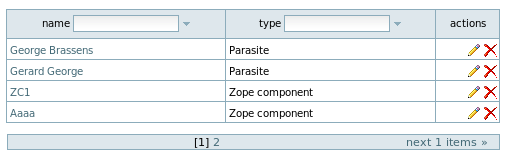
An additional banner in the bottom of the page allows to browse the next/previous objects. Finally, the boolean parameter "Show workflow comment field" allows to display or not a field allowing you to introduce a comment every time you trigger a workflow transition on an object. Workflows and security are covered in more detail in the next page. When enabled (which is the default), on every main page (consult view) of every object you will get a field besides the buttons for triggering transitions, like this:
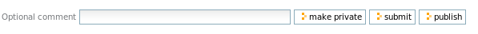
Clicking on any of these buttons will trigger a transition on the object; if you have entered a comment in the field it will be stored as comment for the transition.
Let's come back to the flavours. As already explained, the tool defines a series of flavours. Every flavour is a given set of configuration options that will apply to a subset of all objects in your application. In order to illustrate this, let's create a second flavour by clicking on the "plus" icon. Name it "Free components":
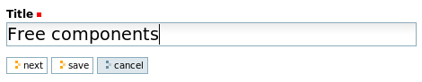
Rename the first flavour "Proprietary components" to get this:
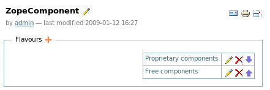
The portlet was updated accordingly:
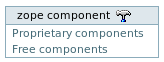
Clicking on "Free components" will retrieve no object at all:
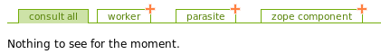
Indeed, all objects created so far were created for the flavour renamed "Proprietary components". Before entering into the details of flavours, you need to get a more precise explanation about the "dashboard". As you can see from the previous screenshot, the dashboard proposes one "tab" for every "root" class (defined with root=True, more info here) and one tab (named "consult all" by default) for consulting all instances of all root classes. Clicking on the tab of a given root class displays all instances of this class; clicking on the "plus icon" related to this tab brings you to a form that will allow you to create a new instance of this class. Any dashboard page displays a table that contains one row per object. All those tables have at least 2 columns: title (object title is also called "name") and "actions" (this column presents actions that one may perform on objects (edit, delete, etc). The example below shows the dashbord page for zope components:
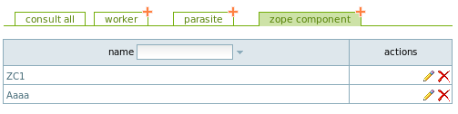
The dashboard page "consult all" contains one more column containing the type or class the object belongs to:
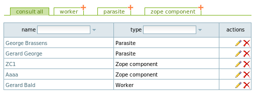
Now let's talk about flavours. Indeed, within a given flavour (in tab "user interface"), you may add new columns to dashboard pages. In this tab, for every root class, a listbox allows you to choose zero, one or more class attributes (this list contains an additional special attribute which represents workflow state) for displaying them into the dashboard. In flavour "Proprietary software", go to the "edit" view of this tab, select the values as shown below (keep the "control" key pressed for selecting multiple values) and click on "save":
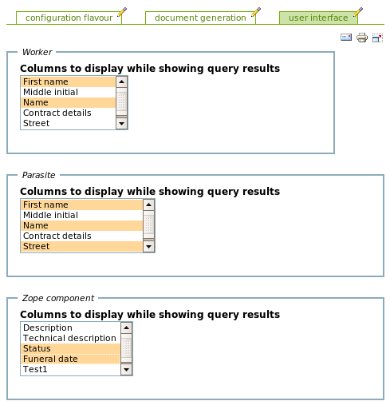
Now, check how dashboard pages have evolved. For example, the dashboard for Zope components looks like this now:
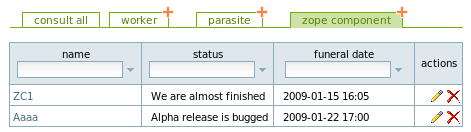
This change only impacts a given flavour. If you create a Zope component among "Free components", you will get the default dashboard page:
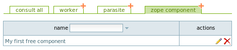
When using additional columns this way, the "consult all" tab may also evolve. In fact, if an attribute with a given name is selected as dashboard column for every root class, it will also appear in the tab "consult all". This can be useful when root classes all inherit from a parent class for example.
Every flavour also contains a tab "document generation". A detailed explanation about this tab can be found here, so I will not explain it further in this section.
When introducing parameters common to all fields (check here), we have introduced field optional. When a field is defined as optional, it may or not be used from flavour to flavour. Let's take an example. Please modify class ZopeComponent and add parameter optional=True to attributes status and funeralDate. Re-generate your application, restart Zope and re-install the corresponding Plone product. Now, in every flavour, you have the possibility to use or not those fields. Go for example to flavour "Free components". A new tab "data" appears (it groups all parameters that customize the conceptual model behind your application). Edit this tab and select both fields:
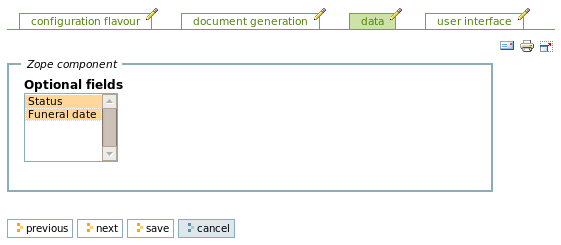
In flavour "Proprietary components", do the same but select only field "status".
In flavour "Free components", for every Zope component, both fields appear (on the "edit" and "consult" views). Here is the consult view, for example:
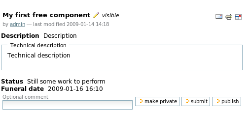
In flavour "Proprietary components", for every Zope component, the field funeralDate does not appear anymore. Here is the edit view, for example:
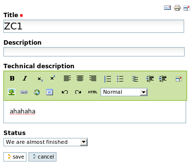
Making fields optional or not has no impact in the Zope database. All fields are always present, but simply hidden in all views if optional=False. It means that you may easily change your mind and decide at any time to start using a optional field for a given flavour.
When introducing parameters common to all fields (check here), we have introduced field editDefault. In a lot of situations, we need default values for fields. But in some cases, instead of "hard-coding" the default value (in the Python code) it is preferable to have the possibility to modify this default value throug-the-web. This will happen with gen, on a per-flavour basis, for every field declared with editDefault=True: a new widget will appear in every flavour for editing the default value.
Let's illustrate this with an example. For class ZopeComponent, add parameter editDefault=True to attributes description and status. Re-generate your application, restart Zope and re-install the corresponding Plone product. Now, in every flavour (tab "data"), widgets were added. Go for example to flavour "Free components" and edit this tab this way:
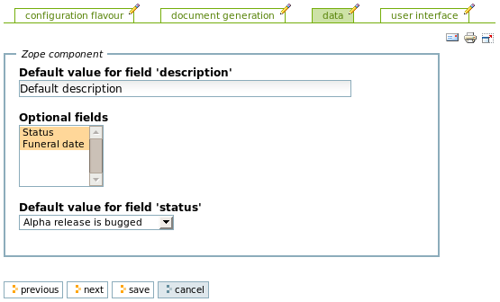
If you try to create a new Zope component in flavour "Free components" you will get this "pre-filled" form:
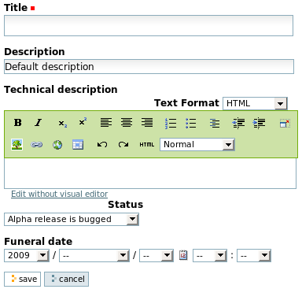
Until now, we have seen all Tool and Flavour attributes managed by gen itself. If you want to add your own attributes, you can also do it. This way, the Tool and its flavours may become the unique configuration panel for your whole application. Beyond some simple configuration options that one may edit through-the-web, one interesting use case justifying tool and flavour customization is the definition, through Ref attributes added to your custom Tool or Flavour, of some "global" objects, typically controlled by a limited number of power-users, that are referred to by user-defined, "root-class-like" objects.
Let's illustrate it first by defining a custom Tool. We will use our ZopeComponent example. Suppose that the company that creates those components is organized into bunches of geeks. Every component is developed under the responsibility of a bunch. We first need a class for defining bunches:
class BunchOfGeek:
description = String(format=String.TEXT)
Creating a custom tool is as simple as inheriting from class
class ZopeComponentTool(Tool):
someUsefulConfigurationOption = String()
bunchesOfGeeks = Ref(BunchOfGeek, multiplicity=(0,None), add=True,
link=False, back=Ref(attribute='backToTool'),
shownInfo=('description',))
In this tool, I have created a dummy attribute for storing some configuration option as a String, and a Ref attribute that will, at the Tool level, maintain all bunches defined in our company.
Now please modify class ZopeComponent by adding a Ref attribute that will allow to assign the component to a given bunch:
responsibleBunch = Ref(BunchOfGeek, multiplicity=(1,1), add=False,
link=True, back=Ref(attribute='components'))
Pshhhhhhhhhh! 9 new lines of code, my synapses are melting. Again: re-generate, re-start Zope and re-install the Plone product. Then, go to the Tool: our 2 new attributes are there!
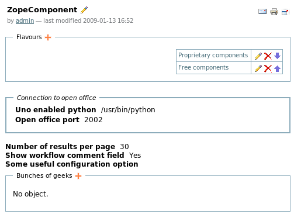
Create a bunch of bunches of geeks:
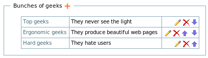
Now, go to the dashboard for flavour "Proprietary components" and edit a given Zope component. In the edit view, a new field allows you to select the responsible bunch. You can choose among your 3 bunches.
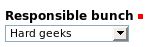
Now, go to flavour "Free components" and try to edit a given Zope component. Aaargh! For field "responsible bunch" the selection box is empty! Why? Remember that flavours are a way to partition your application objects into independent sets, each one having its own configuration. But what about instances of BunchOfGeek? To what set do they belong? You have found the answer: all objects you define at the Tool level (through Ref attributes) belong to the "set" defined by the first flavour that gen creates when your gen-application comes to life. It means that bunches of geeks should be defined at the flavour level and not at the tool level. In a lot of situations, though, you will have a single flavour; in this case, all your global objects may reside at the Tool level.
We will now transform our example in order to define bunches of geeks at the flavour level. First, delete from your tool the 3 bunches you have created. Then, move attribute bunchesOfGeeks from your custom tool to a new custom Flavour:
class ZopeComponentTool(Tool):
someUsefulConfigurationOption = String()
class ZopeComponentFlavour(Flavour):
anIntegerOption = Integer()
bunchesOfGeeks = Ref(BunchOfGeek, multiplicity=(0,None), add=True,
link=False, back=Ref(attribute='backToTool'),
shownInfo=('description',), page='data')
Notice an additional small change: within the flavour, the attribute will be present in page data, which is one of the default flavour pages. Re-generate, blablah... Then, this page for every Flavour will look like this:
Now, let's create 2 bunches for every flavour. Create or edit a Zope component within flavour "Free components". Field "Responsible bunch" will only be filled with the ones you have created within this flavour.
As you may have noticed, the default Tool class defines only one page (the main page). Feel free to add pages to your custom tool. The default Flavour class defines the following pages; within your custom flavour, you may either add fields to those existing pages (like in the previous example) or add your own pages.
| Page name | Description |
|---|---|
| main | By default, the main Flavour page (corresponding to the left-most tab) only shows the Flavour name and a link to go back to the Tool. |
| documents | All stuff tied to generation of documents from POD templates. |
| data | Configuration options related to the conceptual model behind your application. Usage of optional fields or default editable values are configured through this page for example. |
| userInterface | Configuration options related to the way your gen-application looks. Columns displayed in the dashboards are configured here for example. |
When defining fields on custom tools and flavours, some parameters have no sense. This is the case for all parameters enabling "configurability", like editDefault, optional, etc: you can't meta-configure (=configure the configuration). If you try to use those parameters on fields defined on custom tools and flavour they will be ignored by gen.
Now that we know everything about tools and flavours, we may give more precisions about object storage, first introduced in the previous page. The tool for your application, be it customized or not, corresponds to a Zope object that lies directly within the object corresponding to your Plone site. You may see it from the ZMI:
The name of the Tool object is based on your application name. Here, within the Plone Appy site, the tool corresponding to the application named ZopeComponent is called (=has id) portal_zopecomponent. Furthermore, you see that flavours are folders contained within the tool. Every object created through Ref fields associated to a tool or flavour will be stored within the folder that corresponds to this tool or flavour. For example, you may verify that bunches of geeks are stored within their corresponding flavour.
Until now, we have already encountered several places where we manipulate objects from code (ie within an onEdit method) or from POD templates, for, i.e., getting or setting field values. You deserve more explanations about those objects. The truth is: they are not real instances of the classes you define in your application. Why?
"Real" objects are created and managed by Zope (remember: we use Zope as underlying framework). But those objects are complex and squeezed, their interface is ugly and contains an incredible number of methods inherited from dozens of Zope classes. Yes, I know, I am responsible for the choice of Zope for Appy. Understand me: Zope already implements a lot of interesting things like security. In order to preserve Appy developers from Zope complexity I decided to create some nice, simple, minimalistic wrappers around Zope objects. When you manipulate objects, the truth is that you manipulate instances of those wrappers.
The nice news about wrapper classes is that they inherit from your gen-classes. So you are always able to use on objects/wrappers the methods you have defined in your classes. But they also inherit from a wrapper class that inherits itself from other wrappers (like wrappers corresponding to parent classes of your gen-class if relevant) and ultimately from an abstract root AbstractWrapper class. If you are curious, you may consult all wrapper definitions which are generated in [yourZopeInstance]/Products/[yourApplicatonName]/Extensions/appyWrappers.py.
This "wrapper mechanism" abstracts the Appy developer from the underlying technology. It means that gen could potentially run with other Python-based frameworks than Zope/Plone. The gen architecture is ready for integrating other code generators; but for the moment, only one generator has been written (the Plone generator).
Pragmatically, what you need to know is the following. For every Appy field defined in a gen-class, the corresponding wrapper class contains a Python property (more info here) that has the same name, for which a getter function is defined. Every time you write a thing like:
self.bunchesOfGeeks
The getter function is triggered behind the scenes and queries the real Zope object for getting the expected result. After it, the function may potentialy adapt the result before giving it to you. In this example, every "Zope" bunch of geeks is wrapped and you get a list of BunchOfGeek wrappers. This way, you always manipulate wrappers and you may forget everything about the cruel Zope world.
Doing the same thing on a Computed field will trigger the machinery you have defined for computing the field; you will simply get the result!
For setting field values on Zope objects, wrappers override the standard Python method __setattr__ (more info here; it did not work by defining a setter through on the Python property). Again, when writing things like
self.title = self.firstName + ' ' + self.name
field title of the corresponding Zope object is updated through a real, behind-the-scenes call to the corresponding Zope method.
If you are an experienced Zope developer and you feel nostalgic about manipulating real Zope objects, or if you believe that in some situations the wrapping mechanism may constitute a potential performance problem, Appy still allows you to manipulate real Zope objects directly. Suppose self represents a wrapper; writing
self.o
gives you the real Zope object. In these pages I will not document Zope objects because I am in the process of trying to forget everything about them.
Beyond getters and setters, Appy wrappers give you plenty of nice attributes and methods for manipulating your objects. The following table shows you available attributes (or Python properties).
| field name | writable? | description |
|---|---|---|
| tool | No | From any wrapper, you may access the application tool through this property. |
| session | Yes | Gives you access to the Zope "session" object. By "writable" I mean you may put things into it (this is a dict-like object), but don't try to replace this object with anything else. |
| typeName | No | Gives you a string containing the name of the gen-class tied to this object. |
| id | No | The id of the underlying Zope object. |
| state | No | The current workflow state of the object (as a string value). |
| stateLabel | No | The translated label of the current workflow state. |
| klass | No | The Python class (=gen-class) related to this class. Indeed, because the instances you manipulate in the code inherit from special wrappers, writing self.__class__ will give you a wrapper class. So write self.klass instead. |
The following table shows you available methods.
| method name | parameters | description |
|---|---|---|
| create | fieldName, **kwargs | Creates a new object and links it to this one through Ref field having name fieldName. Remaining parameters **kwargs are used for initialising fields of the newly created object. Here is an example, inspired from the one described above. Suppose that, in every flavour, a bunch of geeks called "Escadron de la mort" must absolutely be present: it includes the best geeks that you use for debugging the most critical Zope components. So every time you create or edit a flavour, you need to ensure that this bunch is there. If not, you will create it automatically. Code for class ZopeComponentFlavour must evolve this way:
class ZopeComponentFlavour(Flavour): |
| link | fieldName, obj | Links the existing object obj to the current one through Ref field fieldName. Already linked objects are not unlinked. This method is used by method create but may also be used independently. |
For setting Ref fields, please use the create and link methods instead of the predefined setters which may not work as expected.
Tool and Flavour objects, be they customized or not, adopt the same "wrapper" mechanism as described above. In this section, we will simply explain how to get/set programmatically the predefined fields that gen generates automatically on tools and flavours. The following table presents the names of the predefined attributes defined on any Tool:
| field name | description |
|---|---|
| flavours | The list of flavours defined in this tool. |
| unoEnabledPython | The path to a potential UNO-enabled Python interpreter (for connecting to Open Office in server mode). |
| openOfficePort | The port on which OpenOffice runs in server mode. |
| numberOfResultsPerPage | The maximum number of results shown on any dashboard page. |
| listBoxesMaximumWidth | The maximum width of listboxes managed by gen (the ones used for displaying the list of objets which are available through Ref fields defined with link=True, for example). |
| showWorkflowCommentField | The boolean indicating if the field for entering comments when triggering a worflow transition must be shown or not. |
For flavours, things are a little more complex. Imagine we have, throughout our gen-application, 25 fields parameterized with editDefault=True in 6 classes. The corresponding attributes that hold the default values in the flavours have an ugly name that includes the full package name of the class. Instead of forcing you to remember this obscure naming convention, a nice method defined on the Flavour class allows to retrieve this attribute name:
| method name | parameters | description | ||||||||
|---|---|---|---|---|---|---|---|---|---|---|
| getAttributeName | attributeType, klass, attrName=None | This method generates the attribute name based on attributeType,
a klass from your gen-application, and an attrName (given only if needed, for example if attributeType is defaultValue). attributeType may be:
Here is an example. Suppose you want to modify programmatically, on a given flavour, the list of columns that are shown on the dashboard that present ZopeComponents. You can do it this way:
attrName = flavour.getAttributeName('resultColumns', ZopeComponent) |
Besides flavour attributes having oscure names, some attributes have a normal name:
| field name | writable? | description |
|---|---|---|
| number | No | The flavour number. |
When choosing field and method names for your gen-classes, try to avoid using names corresponding to fields or methods from base Appy classes (wrappers, tool, flavours).
When (re-)installing your gen-application, you may want to initialize it with some data or configuration options. You do this by specifying a special action named install on your customized tool, like in the example below (the ZopeComponent application).
class ZopeComponentTool(Tool):
someUsefulConfigurationOption = String()
def onInstall(self):
self.someUsefulConfigurationOption = 'My app is configured now!'
install = Action(action=onInstall)
Re-generate your gen-application, re-start Zope, log in as administrator and go to site setup->Add/Remove products. Your product wil look like this (it needs re-installation):
Re-install your product and go to the consult view of your configuration panel. The install action has been executed:
Moreover, because your installation procedure is an action, you may trigger your custom installation procedure via the available "install" button.
Note that actions defined on custom tools or flavours are well suited for importing data or executing migration scripts (so actions may, in a certain sense, represent a way to replace the notion of "profiles" available in Plone. Actions are easier to trigger because they can be displayed anywhere on your tool, flavour or on any gen-class).
gen-applications benefit from an automated support for i18n. How does it work? First of all, you need to declare what language(s) need to be supported in your gen-application. This is done through the creation, anywhere in your gen-application, of an instance of class appy.gen.Config:
from appy.gen import Config
c = Config()
c.languages = ('en', 'fr')
By configuring your Config instance this way, you tell gen to support English and French. If you don't do this, only English is supported by default.
Every time you (re-)generate your gen-application, i18n files are created or updated in the corresponding generated Plone product. With the above settings, gen will generate the following files, in [yourZopeInstance]/Products/[yourApplication]/i18n (the product here is named ZopeComponent):
ZopeComponent.pot
ZopeComponent-en.po
ZopeComponent-fr.po
ZopeComponent.pot contains all i18n labels generated for your application, together with their default values (in English). English translations are in ZopeComponent-en.po, while French translations are in ZopeComponent-fr.po.
The format of these files is quite standard in the i18n world. Le'ts take a look to the beginning of ZopeComponent.pot:
msgid ""
msgstr ""
"Project-Id-Version: ZopeComponent\n"
"POT-Creation-Date: 2008-12-12 14:18-46\n"
"MIME-Version: 1.0\n"
"Content-Type: text/plain; charset=utf-8\n"
"Content-Transfer-Encoding: 8bit\n"
"Plural-Forms: nplurals=1; plural=0\n"
"Language-code: \n"
"Language-name: \n"
"Preferred-encodings: utf-8 latin1\n"
"Domain: ZopeComponent\n"
An interesting general information here is the domain name (last line) which is ZopeComponent. Indeed, Plone structures translations into domains. A domain is a group of translations that relate to a bunch of functionality or to a given Plone component. gen creates a specific domain for every gen-application. In the example, domain ZopeComponent has been created. Why do I explain this to you? Really, I don't know. With gen, you don't care about i18n domains, gen manages all this boring stuff for you. Sorry. Mmh. Let's continue to analyse the file. In the (very similar) headers of the English and French translation files (ZopeComponent-en.po and ZopeComponent-fr.po), the important thing that is filled is the code and name of the supported language (parameters Language-code and Language-name).
After this header, you will find a list of labels. In the pot file, every label is defined like this one:
#. Default: "Funeral date"
msgid "ZopeComponent_ZopeComponent_funeralDate"
msgstr ""
In every related po file, you will find the same entry. Translating a gen-application is as simple as editing, for every po file, every msgstr line for every i18n label. If you don't fill a given msgstr, the default value will be used. You may insert HTML code within msgstr entries.
The i18n machinery of Plone works this way: every time Zope/Plone encounters an i18n label in a web page (or part of it), it tries to find, in the language specified by the web browser, a translation in the corresponding po file (or a cached version of it; if you change the translations in the po files you need to restart Zope or refresh, through the ZMI, the corresponding "catalog object" Zope has created in Root Folder/Control_Panel/TranslationService). Plone and Appy-generated web pages do not "hard-code" any translation; they always consult Zope i18n catalog objects. So after having translated all labels in all po files, changing your browser language and refreshing a given page will produce the same page, fully translated in the new specified language.
gen creates and maintains pot and po files itself. So gen implements the same functionality as tools like i18dude. You don't need such tools to manage i18n files of gen-applications. Although i18n files are stored in the generated Plone product, they will never be deleted by triggering a code (re-)generation. gen will potentially complete the files but will never delete them.
Now, you need to know the meaning of every label gen creates and maintains in the po(t) file(s), and at what place(s) they are used within the generated edit and consult views (or in the dashboards, etc). The following table explains this. Dynamic parts used in labels (like [className]) are explained in yet another table below. For every label, the default value is specified. For the majority of labels, gen proposes a "nice" default value. For example, field responsibleBunch will have default value Responsible bunch; class BunchOfGeeks will have default value Bunch of geeks. The "nice" algorithm tries simply to recognize camel-cased words and separates them.
| label "pattern" | usage | default value |
|---|---|---|
| [className]_[fieldName] | The label of the Appy field of a given gen-class. It appears on both edit and consult views, as widget label. For example, field funeralDate of class ZopeComponent in ZopeComponent.py will produce label ZopeComponent_ZopeComponent_funeralDate. | nice |
| [className]_[fieldName]_descr | A description associated to a given Appy field. It appears on the edit view, between the widget label and the widget. Here is an example of a field shown on an edit view, with a label and description.
|
empty |
| [className]_[fieldName]_list_[fieldValue] | When defining a String field with a list of values as validator, such a label is created for every value of this list. Consider the following field declaration (in class ZopeComponent from ZopeComponent.py): status = String(validator=['underDevelopement', 'stillSomeWorkToPerform', 'weAreAlmostFinished', 'alphaReleaseIsBugged', 'whereIsTheClient']). gen will generate 5 labels (one for each possible value). The first one will be ZopeComponent_ZopeComponent_status_list_underDevelopement. |
nice |
| [className]_[fieldName]_valid | Error message produced when validation fails on a given field (edit view) and the validation mechanism does not return an error message. | "Please fill or correct this." |
| [className]_[fieldName]_back | Label of a back reference. Consider the following field definition in class ZopeComponent: responsibleBunch = Ref(BunchOfGeek, multiplicity=(1,1), add=False, link=True, back=Ref(attribute='components')) On the consult view related to BunchOfGeek, the label of the back reference for consulting components for which this bunch is responsible for will be ZopeComponent_BunchOfGeek_components_back. |
nice |
| [className]_[fieldName]_action_ok | Only generated for Action fields. Represents the message to display when the action succeeds. | "The action has been successfully executed." |
| [className]_[fieldName]_action_ko | Only generated for Action fields. Represents the message to display when the action fails. | "A problem occurred while executing the action." |
| [applicationName] | This unique label translates the name of the application. It is used as title for the application portlet. | nice |
| [className] | The name of a gen-class. It appears at several places (dashboard tabs, edit views, ...). This label is then "declined" into several others, suffixed with [_flavourNumber] for flavours 2 to n. It means that you may name your concepts differently from one flavour to the other. For example, a class named Meeting may be named "Government meeting" in one flavour and "Parliament meeting" in the other. | nice |
| [className]_edit_descr | The description of a gen-class. It appears on edit views, when creating instances of this class. Like the previous label, this one is then "declined" into several others, suffixed with [_flavourNumber] for flavours 2 to n. | empty |
| [className]_page_[pageName] | This label is used for translating the name of a page which is not the main page (the main page takes the --translated-- name of the corresponding gen-class). Page names are visible on page tabs. Because this label is prefixed with the className, for every child class of a given class that defines pages, gen will produce an additional label prefixed with the child class name. | nice |
| [className]_group_[groupName] | This label is used for translating the name of a group, used as label for group fieldsets on both edit and consult views. Because this label is prefixed with the className, for every child class of a given class that defines groups, gen will produce an additional label prefixed with the child class name. | nice |
| [workflowName]_[stateName] | This label is used for translating the name of a workflow state. Because this label is prefixed with the workflowName, for every child workflow of the one that defines the corresponding state, gen will produce an additional label prefixed with the child workflow name. | nice |
| [workflowName]_[transitionName] | This label is used for translating the name of a workflow transition. Because this label is prefixed with the workflowName, for every child workflow of the one that defines the corresponding transition, gen will produce an additional label prefixed with the child workflow name. | nice |
| workflow_state | Translation of term "workflow state" (used a.o. if the corresponding column is shown in a dashboard). | "state" |
| root_type | Translation of term "type" used for the corresponding column on the dashboard tab "consult all". | "type" |
| workflow_comment | Label of the field allowing to enter comments when triggering a workflow transition. | "Optional comment" |
| choose_a_value | Translation of the "empty" value that appears in listboxes when the user has not chosen any value. | "- none -" |
| min_ref_violated | Error message shown when, according to multiplicities, too few elements are selected for a Ref field. | "You must choose more elements here." |
| max_ref_violated | Error message shown when, according to multiplicities, too many elements are selected for a Ref field. | "Too much elements are selected here." |
| no_ref | Text shown when a Ref field contains no object. | "No object." |
| add_ref | Text shown as tooltip for icons that allow to add an object through a Ref field. | "Add a new one" |
| ref_name | When displaying referenced objects for a Ref field with showHeaders=True, this label translates the title of the first column (=name or title of the referenced object). | "name" |
| ref_actions | When displaying referenced objects for a Ref field with showHeaders=True, this label translates the title of the last column (=actions). | "actions" |
| move_up | Tooltip for the icon allowing to move an element up in a Ref field. | "Move up" |
| move_down | Tooltip for the icon allowing to move an element down in a Ref field. | "Move down" |
| query_create | Text shown as tooltip for icons that allow to create a new root object on a dashboard. | "create" |
| query_no_result | Text shown when a dashboard or query contains no object. | "Nothing to see for the moment." |
| query_consult_all | Label of the leftmost dashboard tab (consult all instances of all root classes for a given flavour). | "consult all" |
| bad_int | General error message displayed when a non-integer value is entered in an Integer field. | "An integer value is expected; do not enter any space." |
| bad_float | General error message displayed when a non-float value is entered in a Float field. | "A floating-point number is expected; use the dot as decimal separator, not a comma; do not enter any space." |
| bad_email | General error message displayed when an invalid email is entered in a String field with validator=String.EMAIL. | "Please enter a valid email." |
| bad_url | General error message displayed when an invalid URL is entered in a String field with validator=String.URL. | "Please enter a valid URL." |
| bad_alphanumeric | General error message displayed when an invalid alphanumeric value is entered in a String field with validator=String.ALPHANUMERIC. | "Please enter a valid alphanumeric value." |
As already mentioned, in the table below, some label "parts" are explained.
| label part | description |
|---|---|
| applicationName | The name of your gen-application. If your application is a Python package (=a file), it corresponds to the name of the file without its extension (application name for ZopeComponent.py is ZopeComponent). If you application is a Python module (=a folder), it corresponds to the name of this folder. |
| className | Refers to the full package name of a gen-class, where dots have been replaced with underscores. For example, class ZopeComponent in ZopeComponent.py will have className "ZopeComponent_ZopeComponent". There are 2 exceptions to this rule. className for a flavour, be it the default one or a custom class in your gen-application, will always be [applicationName]Flavour. In the same way, className for a tool will always be [applicationName]Flavour. |
| workflowName | Refers to the full package name of a gen-workflow, where dots have been replaced with underscores and all characters have been lowerized. For example, workflow ZopeComponentWorkflow in ZopeComponent.py will have workflowName "zopecomponent_zopecomponentworkflow". |
| fieldName | Refers to the name of an Appy field, declared as a static attribute in a gen-class. For example, attribute responsibleBunch of class ZopeComponent will have fieldName "responsibleBunch". |
Although gen tries to manage automatically the whole i18n thing, in some cases you may need to create and use specific labels. You create new labels by adding them "by hand" in the pot file. For example, edit ZopeComponent.pot and add the following label:
#. Default: "Please be honest and do not pretend there is any kind of simplicity in your Zope 3 component."
msgid "zope_3_is_not_simple"
msgstr ""
As part of the generation process, gen synchronizes the pot and po files. So re-generate your product and consult ZopeComponent-fr.po and ZopeComponent-en.po: the label has been added in both files. You may now edit those translations and save the edited po files.
In the following example, we use the new label for producing a translated validation message on a given field.
class ZopeComponent:
...
def validateDescription(self, value):
res = True
if value.find('simple') != -1:
res = self.translate('zope_3_is_not_simple')
return res
technicalDescription = String(format=String.XHTML, validator=validateDescription)
...
On any (wrapped) instance of a gen-class, a method named translate allows you to translate any label. This method accepts 2 parameters: label and domain. In the example, no value was given for parameter domain; it defaults to the application-specific domain (in this case, ZopeComponent). Maybe one day you will need to use and translate labels packaged with Plone or another Plone product; in this case you will need to specify another domain. The main domain for Plone is named plone (case sensitive). For example, "delete" icons in Appy pages have a tooltip corresponding to label "label_remove" defined in domain "plone". If you want to use it, write self.translate('label_remove', domain='plone'). Labels in standard Plone domains are already translated in a great number of languages.
Now imagine you need to change the default value for this label in ZopeComponent.pot. It means that your translations in ZopeComponent-fr.po and ZopeComponent-en.po need a potential revision. Edit the default value and re-generate your product. The labels in the po files will be flagged as "fuzzy":
#. Default: "Please be honest and do not pretend there is any kind of simplicity in your Zope 3 component. I changed the default value."
#, fuzzy
msgid "zope_3_is_not_simple"
msgstr "ZOPE 3 n'est pas simple!"
Edit the translation, remove the line with "fuzzy" and you are done!
It is possible to make your gen pages more dynamic by defining relationships between fields belonging to the same page. For example, by selecting a given item in a list (on a master field), another (slave) field may become visible. This is achieved by using parameters master and masterValue. Let's try it on an example. Remember that, in our HR system, we have added the ability to associate a "parasite index" to a parasite. Suppose that in some cases, the parasite is so weird that you are unable to give him a parasite index. Among the values for field parasiteIndex, we add the value unquantifiable; but in this case, you must give, in another field, details about why you can't quantify its parasiteness:
class Parasite(Person):
...
parasiteIndex = String(validator=['low', 'medium', 'high', 'unquantifiable'],
page='contactInformation', group='numbers')
details = String(page='contactInformation', group='numbers',
master=parasiteIndex, masterValue='unquantifiable')
...
Now, if you edit page "contactInformation" for any parasite, selecting, for field parasiteIndex, any value excepted "unquantifiable" will give you something like this:
Selecting "unquantifiable" will display field details:
Of course, you may use the validation machinery (method validate) and check that, when parasiteIndex is "unquantifiable", field details is not empty. This will be your exercise for tonight.
Note that master/slaves relationships also modify the "consult" pages. When "unquantifiable" is chosen, both fields are rendered:
When another value is selected, field details is invisible:
A master widget may have any number of slaves. Of course, masters and slaves must be on the same page. For the moment, the only behaviour on slaves is to display them or not. In future gen releases, other ways to persecute slaves will be implemented, like changing default values, adapting the list of possible values, etc). For the moment, only the following fields may become masters:
In future gen releases, masterValue will accept a list of values or a single value.
As already mentioned, a series of configuration options for your gen-application may be defined in an instance of class appy.gen.Config. There must be only one such instance by gen-application. The following table describes the available options defined as Config attributes.
| Attribute | Default value | Description |
|---|---|---|
| languages | ['en'] | See here. |
| defaultCreators | ['Manager', 'Owner'] | See here. |
| minimalistPlone | False | If True, this flag will produce a minimalist Plone, where some user interface elements, like actions, portlets or other stuff less relevant for building web applications, are removed or hidden. Using this produces effects on your whole Plone site! This can be interesting on development machines: less visual gadgets make geeks more productive. |
Here is an example of a Config instance:
from appy.gen import Config
c = Config()
c.languages = ('en', 'fr')
c.defaultCreators += ['ZLeader']
c.minimalistPlone = True
This code may be placed anywhere in your gen-application (in the main package, in a sub-package...)